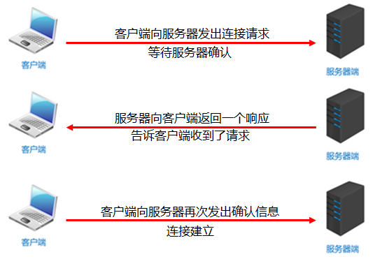
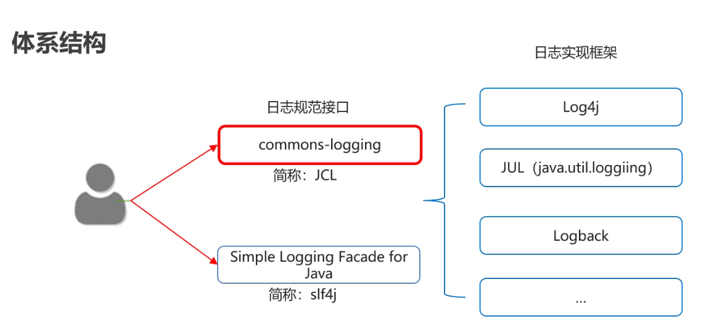
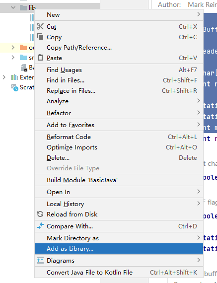
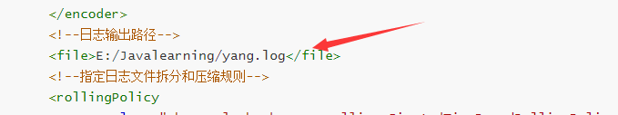

TCP通信程序
Java中的TCP通信
Java对基于TCP协议的的网络提供了良好的封装，使用Socket对象来代表两端的通信端口，并通过Socket产生IO流来进行网络通信。
Java为客户端提供了Socket类，为服务器端提供了ServerSocket类
- 

创建客户端
构造方法
方法名 说明 Socket(InetAddress address,int port) 创建流套接字并将其连接到指定IP指定端口号 Socket(String host, int port) 创建流套接字并将其连接到指定主机上的指定端口号 相关方法
方法名 说明 InputStream getInputStream() 返回此套接字的输入流 OutputStream getOutputStream() 返回此套接字的输出流
import java.io.IOException;
import java.io.OutputStream;
import java.net.Socket;
import java.nio.charset.StandardCharsets;
public class client {
public static void main(String[] args) throws IOException {
Socket socket = new Socket("127.0.0.1",10001);
//获取输出流，写数据
//OutputStream getOutputStream() 返回此套接字的输出流
OutputStream os = socket.getOutputStream();
os.write("hello".getBytes(StandardCharsets.UTF_8));
//释放资源
os.close();
socket.close();
}
}
创建服务端
构造方法
方法名 说明 ServerSocket(int port) 创建绑定到指定端口的服务器套接字 相关方法
方法名 说明 Socket accept() 监听要连接到此的套接字并接受它 注意事项
- accept方法是阻塞的,作用就是等待客户端连接
- 客户端创建对象并连接服务器,此时是通过三次握手协议,保证跟服务器之间的连接
- 针对客户端来讲,是往外写的,所以是输出流
针对服务器来讲,是往里读的,所以是输入流 - read方法也是阻塞的
- 客户端在关流的时候,还多了一个往服务器写结束标记的动作
- 最后一步断开连接,通过四次挥手协议保证连接终止
public class server {
public static void main(String[] args) throws IOException {
//创建服务器端的Socket对象(ServerSocket)
//ServerSocket(int port) 创建绑定到指定端口的服务器套接字
ServerSocket ss = new ServerSocket(10001);
//Socket accept() 侦听要连接到此套接字并接受它
Socket s = ss.accept();
//获取输入流，读数据，并把数据显示在控制台
InputStream is = s.getInputStream();
byte[] bys = new byte[1024];
int len = is.read(bys);
String data = new String(bys,0,len);
System.out.println("数据是：" + data);
//释放资源
s.close();
ss.close();
}
}TCP通信案例
- 服务端
import java.io.*;
import java.net.ServerSocket;
import java.net.Socket;
public class server {
public static void main(String[] args) throws IOException {
ServerSocket ss = new ServerSocket(10001);
Socket accept = ss.accept();
InputStream is = accept.getInputStream();
int temp;
while((temp = is.read())!=-1) { //-1是结束符的标志由客户端发送
System.out.println((char) temp);
}
// OutputStream os = accept.getOutputStream();
// os.write("who?".getBytes());
BufferedWriter bs = new BufferedWriter(new OutputStreamWriter((accept.getOutputStream())));
bs.write("你谁啊？");
bs.newLine();
bs.flush();
is.close();
accept.close();
ss.close();
}
}
- 客户端
import java.io.*;
import java.net.Socket;
public class client01 {
public static void main(String[] args) throws IOException, IOException {
Socket s = new Socket("127.0.0.1",10001);
//仅仅关闭输出流.并写一个结束标记,对socket没有任何影响
OutputStream os = s.getOutputStream();
os.write("hello".getBytes());
s.shutdownOutput();
// InputStream is = s.getInputStream();
// int temp;
// while((temp=is.read())!=-1){
// System.out.println((char)temp);
// }
BufferedReader br = new BufferedReader(new InputStreamReader(s.getInputStream()));
String line;
while((line = br.readLine())!=null){
System.out.println(line);
}
// is.close();
br.close();
os.close();
s.close();
}
}注意事项：
- 在客户端中，要使用结束标记，不然服务端一直在读取客户端内容形成阻塞
- 因为有中文的存在不能使用字节流读取（getInputStream）要使用字节流读取（InputStreamReader）否则会出现乱码情况。
TCP通信上传文件案例
服务端
public class ServerDemo {
public static void main(String[] args) throws IOException {
ServerSocket ss = new ServerSocket(10000);
ThreadPoolExecutor pool = new ThreadPoolExecutor(
3,//核心线程数量
10, //线程池的总数量
60, //临时线程空闲时间
TimeUnit.SECONDS, //临时线程空闲时间的单位
new ArrayBlockingQueue<>(5),//阻塞队列
Executors.defaultThreadFactory(),//创建线程的方式
new ThreadPoolExecutor.AbortPolicy()//任务拒绝策略
);
while (true) {
Socket accept = ss.accept();
ThreadSocket ts = new ThreadSocket(accept);
//new Thread(ts).start();
pool.submit(ts);
}
//ss.close();
}
}客户端
public class ClientDemo {
public static void main(String[] args) throws IOException {
Socket socket = new Socket("127.0.0.1",10000);
//是本地的流,用来读取本地文件的.
BufferedInputStream bis = new BufferedInputStream(new FileInputStream("socketmodule\\ClientDir\\1.jpg"));
//写到服务器 --- 网络中的流
OutputStream os = socket.getOutputStream();
BufferedOutputStream bos = new BufferedOutputStream(os);
int b;
while((b = bis.read())!=-1){
bos.write(b);//通过网络写到服务器中
}
bos.flush();
//给服务器一个结束标记,告诉服务器文件已经传输完毕
socket.shutdownOutput();
BufferedReader br = new BufferedReader(new InputStreamReader(socket.getInputStream()));
String line;
while((line = br.readLine()) !=null){
System.out.println(line);
}
bis.close();
socket.close();
}
}线程任务类
public class ThreadSocket implements Runnable {
private Socket acceptSocket;
public ThreadSocket(Socket accept) {
this.acceptSocket = accept;
}
@Override
public void run() {
BufferedOutputStream bos = null;
try {
//网络中的流,从客户端读取数据的
BufferedInputStream bis = new BufferedInputStream(acceptSocket.getInputStream());
//本地的IO流,把数据写到本地中,实现永久化存储
bos = new BufferedOutputStream(new FileOutputStream("server\\ServerDir\\" + UUID.randomUUID().toString() + ".jpg"));
int b;
while((b = bis.read()) !=-1){
bos.write(b);
}
BufferedWriter bw = new BufferedWriter(new OutputStreamWriter(acceptSocket.getOutputStream()));
bw.write("上传成功");
bw.newLine();
bw.flush();
} catch (IOException e) {
e.printStackTrace();
} finally {
if(bos != null){
try {
bos.close();
} catch (IOException e) {
e.printStackTrace();
}
}
if (acceptSocket != null){
try {
acceptSocket.close();
} catch (IOException e) {
e.printStackTrace();
}
}
}
}
}注意事项：
使用循环可以多次上传图片
UUID. randomUUID()方法生成随机的文件名，防止文件被覆盖。
加入线程池，减小资源消耗，还可以同时跟多个客户端进行通信。
日志
程序中的日志可以用来记录程序在运行的时候点点滴滴。并可以进行永久存储。
日志与输出语句的区别
输出语句 日志技术 取消日志 需要修改代码，灵活性比较差 不需要修改代码，灵活性比较好 输出位置 只能是控制台 可以将日志信息写入到文件或者数据库中 多线程 和业务代码处于一个线程中 多线程方式记录日志，不影响业务代码的性能
体系结构
logback日志：
通过使用logback，我们可以控制日志信息输送的目的地是控制台、文件等位置。
可以控制每一条日志的输出格式。
通过定义每一条日志信息的级别，我们能够更加细致地控制日志的生成过程。
可以通过一个配置文件来灵活地进行配置，而不需要修改应用的代码。
Logback三个技术模块：
- logback-core：为其他两个模块提供代码基础
- logback-classic：完整实现了slf4j API的模块
- logback-access：模块与Tomcat和Jetty等servlet容器继承，以提供Http访问日志的功能
基本使用
导入jar包：
新建lib文件夹，将jar包粘贴进去，作为库
编写logback配置文件，粘贴到src文件夹下
logback.xml：
<?xml version="1.0" encoding="UTF-8"?>
<configuration>
<!--
CONSOLE ：表示当前的日志信息是可以输出到控制台的。
-->
<appender name="CONSOLE" class="ch.qos.logback.core.ConsoleAppender">
<!--输出流对象 默认 System.out 改为 System.err-->
<target>System.out</target>
<encoder>
<!--格式化输出：%d表示日期，%thread表示线程名，%-5level：级别从左显示5个字符宽度
%msg：日志消息，%n是换行符-->
<pattern>%d{yyyy-MM-dd HH:mm:ss.SSS} [%-5level] %c [%thread] : %msg%n</pattern>
</encoder>
</appender>
<!-- File是输出的方向通向文件的 -->
<appender name="FILE" class="ch.qos.logback.core.rolling.RollingFileAppender">
<encoder>
<pattern>%d{yyyy-MM-dd HH:mm:ss.SSS} [%thread] %-5level %logger{36} - %msg%n</pattern>
<charset>utf-8</charset>
</encoder>
<!--日志输出路径-->
<file>E:/Javalearning/yang.log</file>
<!--指定日志文件拆分和压缩规则-->
<rollingPolicy
class="ch.qos.logback.core.rolling.SizeAndTimeBasedRollingPolicy">
<!--通过指定压缩文件名称，来确定分割文件方式-->
<fileNamePattern>C:/code/itheima-data2-%d{yyyy-MMdd}.log%i.gz</fileNamePattern>
<!--文件拆分大小-->
<maxFileSize>1MB</maxFileSize>
</rollingPolicy>
</appender>
<!--
level:用来设置打印级别，大小写无关：TRACE, DEBUG, INFO, WARN, ERROR, ALL 和 OFF
， 默认debug
<root>可以包含零个或多个<appender-ref>元素，标识这个输出位置将会被本日志级别控制。
-->
<root level="DEBUG">
<appender-ref ref="CONSOLE"/>
<appender-ref ref="FILE" />
</root>
</configuration>在代码中获取日志的对象
按照级别设置记录日志信息
public class Test01 {
//获取日志的对象
private static final Logger LOGGER = LoggerFactory.getLogger(Test01.class);
public static void main(String[] args) {
//3.在代码中获取日志的对象
//4.按照日志级别设置日志信息
LOGGER.debug("debug级别的日志");
LOGGER.info("info级别的日志");
LOGGER.warn("warn级别的日志");
LOGGER.error("error级别的日志");
}
}日志输出的文件路径在xml配置文件中定义

日志的六种级别：
「TRACE」 : designates finer-grained informational events than the DEBUG.Since:1.2.12，很低的日志级别，一般不会使用。
「DEBUG」: 指出细粒度信息事件对调试应用程序是非常有帮助的，主要用于开发过程中打印一些运行信息。
「INFO」: 消息在粗粒度级别上突出强调应用程序的运行过程。打印一些你感兴趣的或者重要的信息，这个可以用于生产环境中输出程序运行的一些重要 信息，但是不能滥用，避免打印过多的日志。
「WARN」: 表明会出现潜在错误的情形，有些信息不是错误信息，但是也要给程序员的一些提示。
「ERROR」: 指出虽然发生错误事件，但仍然不影响系统的继续运行。打印错误和异常信息，如果不想输出太多的日志，可以使用这个级别。
「FATAL」: 指出每个严重的错误事件将会导致应用程序的退出。这个级别比较高了。重大错误，这种级别你可以直接停止程序了。